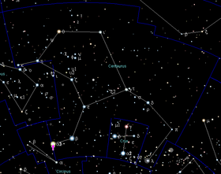

En 2016, el mundo quedó perplejo por el descubrimiento de Próxima b, un planeta similar a la Tierra en órbita alrededor de Próxima Centauri, una de las tres estrellas que forman en sistema triple Alpha Centauri, a poco más de 4 años luz de la Tierra. Parecía increíble, en efecto, que precisamente en la estrella más cercana al Sol se diera la posibilidad de que un mundo ajeno al nuestro pudiera tener vida. Además de tener unas condiciones 'terrestres', en efecto, Próxima b se encuentra justo en la zona de habitabilidad de su estrella, es decir, a la distancia precisa para permitir la existencia de agua en estado líquido en su superficie.
Y ahora un equipo internacional de astrónomos acaba de encontrar el que podría convertirse, si se confirma, en el segundo planeta potencialmente habitable en el mismo sistema estelar, esta vez en órbita de Próxima A, una estrella del mismo tipo que nuestro Sol.
Alpha Centauri es un sistema triple, es decir, formado por tres estrellas: Alpha Centauri A y B, las más brillantes, se orbitan mutuamente una vez cada 80 años y se encuentran a 4,35 años luz de nosotros, mientras que Alpha Centauri C, conocida como Próxima Centauri, es una enana roja mucho menos brillante pero algo más cerca, a 4,23 años luz de la Tierra.
El hallazgo de un nuevo planeta potencialmente habitable en Próxima A, por lo tanto, duplica las posibilidades de que la vida exista justo en la "puerta de al lado". El espectacular hallazgo se acaba de publicar en 'Nature Communications'.
El descubrimiento es fruto de la colaboración del proyecto NEAR (Near Earths in the Alpha Centauri Region), que busca planetas similares al nuestro en Alpha Centauri, y Breakthrough Watch, un programa cuyo objetivo es encontrar planetas similares a la Tierra alrededor de estrellas cercanas.
NEAR lleva años escudriñando las zonas habitables de Alpha Centauri A y B con el Very Large Telescope del observatorio ESO, en Chile. Y para aumentar las posibilidades de éxito ha actualizado el telescopio con varias tecnologías nuevas, entre ellas un coronógrafo térmico, un instrumento diseñado para bloquear la luz de una estrella y permitir la detección de las firmas de calor de los posibles planetas en órbita.
«Hemos logrado la capacidad de obtener imágenes directas de planetas de aproximadamente tres veces el tamaño de la Tierra y en la zona habitable de Alpha Centauri A», afirma Olivier Absili, de la Universidad de Lieja y coautor del estudio.
Los investigadores analizaron más de 100 horas de datos recopilados por NEAR en mayo y junio de 2019. Y en ellos se toparon con una esperanzadora huella térmica justo en la zona habitable de Alpha Centauri A. La señal es compatible con la existencia de un mundo de tamaño similar a Neptuno, orbitando alrededor de la estrella a una distancia de entre una y dos Unidades Astronómicas (UA) Una Unidad Astronómica equivale a 150 millones de km, que es la distancia a la que se encuentra la Tierra del Sol.
Sin embargo, por ahora el planeta no ha sido confirmado, por lo que se sigue tratando de un candidato, de modo que los investigadores se muestran cautos al respecto. Según Kevin Wagner, de la Universidad de Arizona y autor principal del estudio, «nos sorprendió encontrar una señal en nuestros datos. Y aunque la detección cumple con todos los criterios sobre cómo se vería un planeta, aún deben descartarse otras posibles explicaciones alternativas, como polvo en órbita dentro de la zona habitable o un artefacto de los instrumentos y de origen desconocido. La verificación puede llevar algún tiempo y requerirá la participación y el ingenio de la comunidad científica en general».
El coautor del estudio Pete Klupar, por su parte, espera que los nuevos resultados inspiren a los astrónomos a estudiar el sistema Alpha Centauri con mucho más detalle de lo que lo han hecho hasta ahora, ya que entre los datos archivados podría haber nueva evidencia que se pasó por alto y que podría ayudar a la confirmación del nuevo planeta candidato. Según dijo Klupar a Space.com, «lo más emocionante es que, una vez que encontramos un planeta, tendemos a encontrar otros».